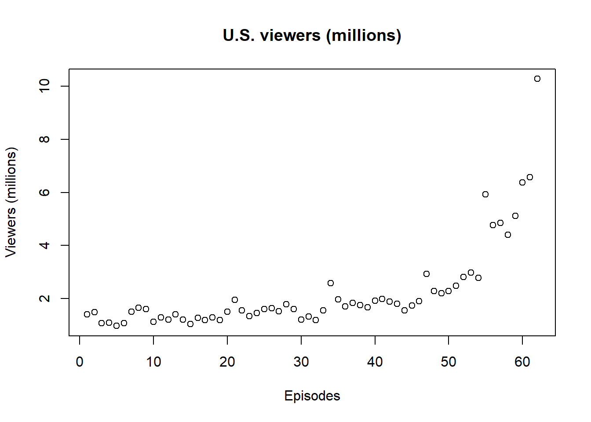
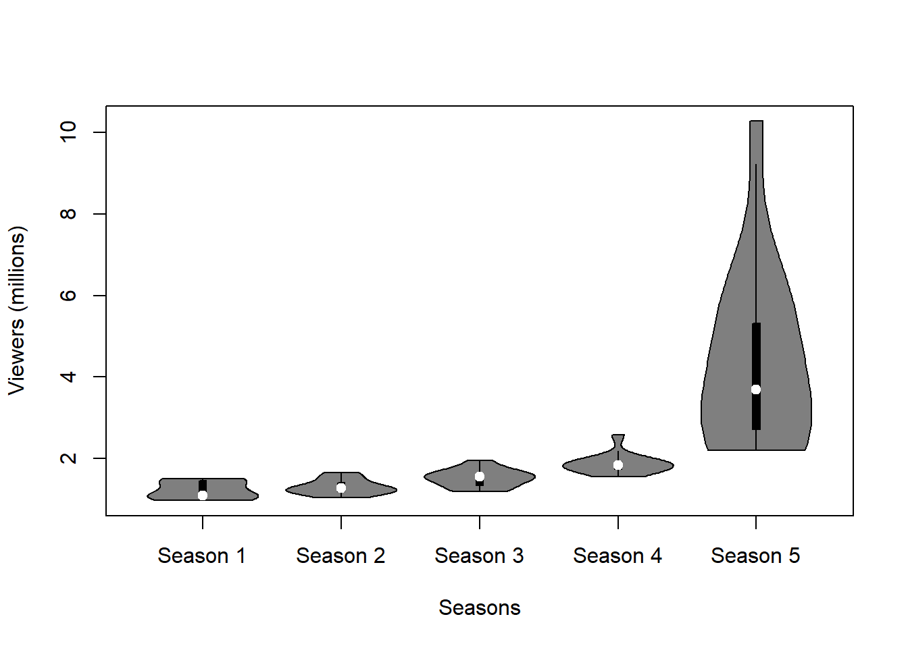

```{r}
#| warning = FALSE
setwd("C:/Users/Adnan_Sevinc/OneDrive - EPAM/University/4.Semester/Reproducible Research [2400-DS2RR]/RRcourse2023/Assignment_5_4_2023")
```1 List of Breaking Bad episodes
Breaking Bad is an American television drama series created by Vince Gilligan, which premiered in 2008 on the cable network AMC. The story is about Walter White (Bryan Cranston), a 50-year-old high school chemistry teacher in Albuquerque, New Mexico. After White is diagnosed with terminal lung cancer, he uses his chemistry expertise to cook crystal meth, assisted by his former student Jesse Pinkman (Aaron Paul), to secure his family’s (played by Anna Gunn and RJ Mitte) inheritance before he dies.
During the course of the series, 62 episodes of Breaking Bad aired over five seasons. The pilot episode was first aired on January 20, 2008, and the series finale, was broadcast on September 29, 2013. Breaking Bad: Original Minisodes, which consisted of several one- to five-minute clips, released 17 short episodes over the course of three years throughout Breaking Bad’s run.[1]
On October 11, 2019, Netflix released El Camino: A Breaking Bad Movie, a feature film continuation of Breaking Bad, written and directed by Gilligan.[2] An additional short film Snow Globe: A Breaking Bad Short was released on February 17, 2020.[3]

1.1 Ratings Summary
```{r}
#| warning = FALSE
library(readxl)
rating <- read_excel("dataset/rating.xlsx")
summary(rating)
``` Season Episode number 1 Episode number 2 Episode number 3
Length:7 Length:7 Length:7 Length:7
Class :character Class :character Class :character Class :character
Mode :character Mode :character Mode :character Mode :character
Episode number 4 Episode number 5 Episode number 6 Episode number 7
Length:7 Length:7 Length:7 Length:7
Class :character Class :character Class :character Class :character
Mode :character Mode :character Mode :character Mode :character
Episode number 8 Episode number 9 Episode number 10 Episode number 11
Length:7 Length:7 Length:7 Length:7
Class :character Class :character Class :character Class :character
Mode :character Mode :character Mode :character Mode :character
Episode number 12 Episode number 13 Average
Length:7 Length:7 Length:7
Class :character Class :character Class :character
Mode :character Mode :character Mode :character 1.2 Upload dataset
```{r}
viewer<- read_excel("dataset/viewersall.xlsx")
viewer$`U.S. viewers (millions)` <- as.numeric(viewer$`U.S. viewers (millions)`)
```2 Graph
```{r}
library(readxl)
plot(viewer$`U.S. viewers (millions)`, xlab = "Episodes", ylab = "Viewers (millions)")
title("U.S. viewers (millions)")
```
```{r}
#| label: fig-cars
#| fig-cap: "Number of viewers by season."
library(vioplot)
```Warning: package 'vioplot' was built under R version 4.1.3Loading required package: smWarning: package 'sm' was built under R version 4.1.3Package 'sm', version 2.2-5.7: type help(sm) for summary informationLoading required package: zooWarning: package 'zoo' was built under R version 4.1.3
Attaching package: 'zoo'The following objects are masked from 'package:base':
as.Date, as.Date.numeric```{r}
#| label: fig-cars
#| fig-cap: "Number of viewers by season."
#| warning = FALSE
#| message = FALSE
vioplot(viewer$`U.S. viewers (millions)` ~ viewer$Season,
xlab = "Seasons" , ylab = "Viewers (millions)")
```
As it can bee observed in Figure 1 the number of viewers increased together with seasons.